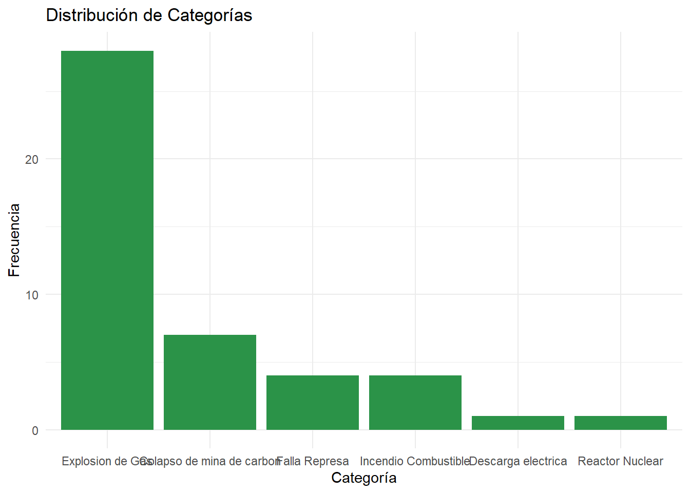
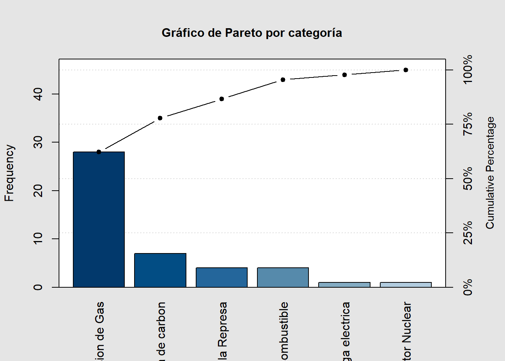
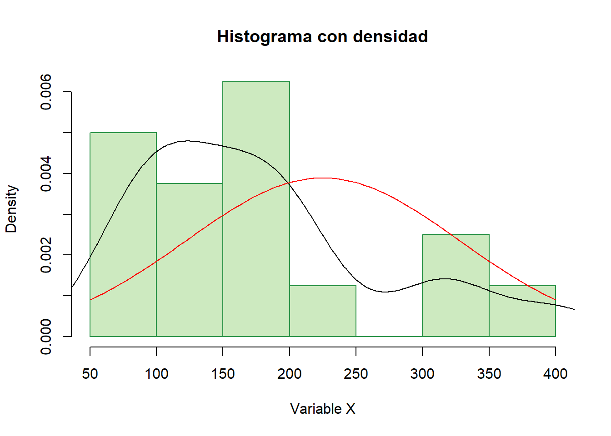
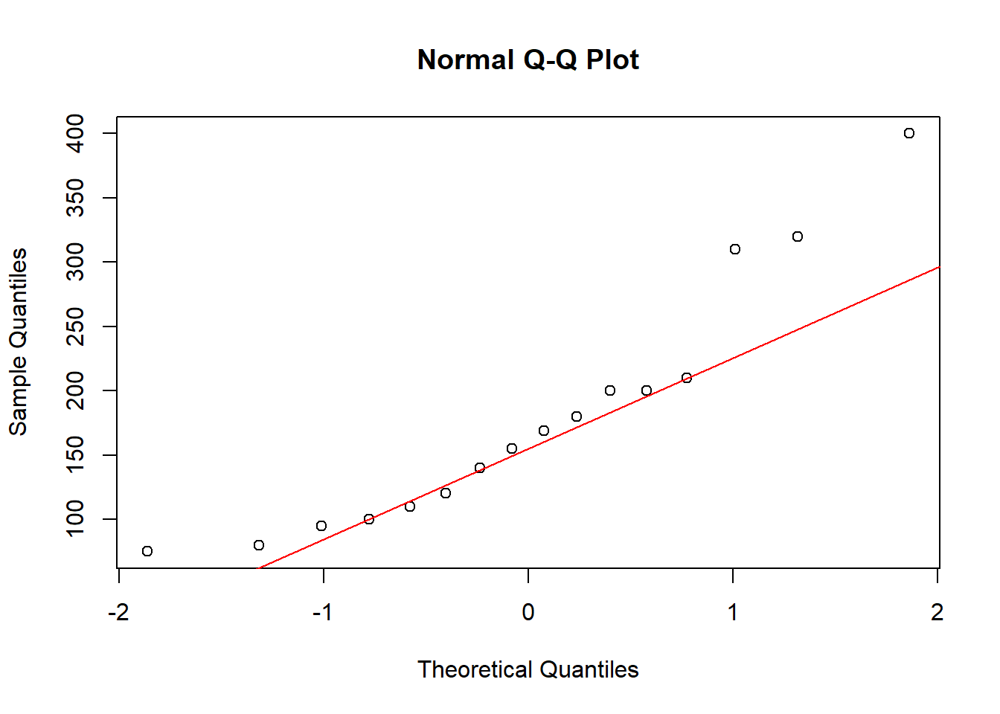
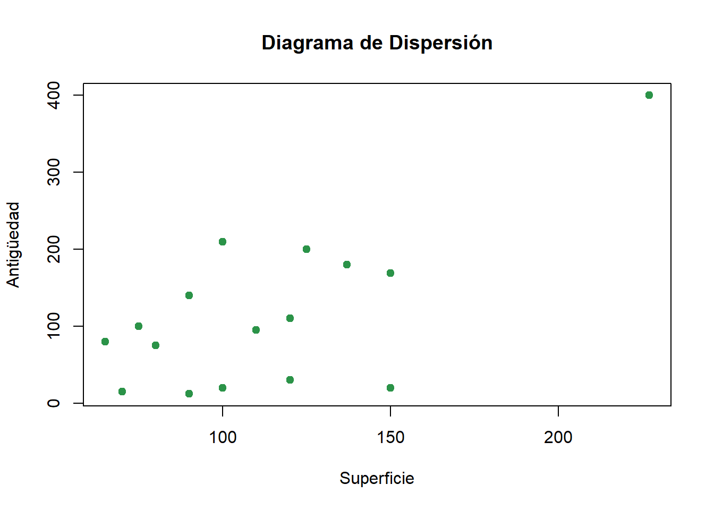

# Ruta absoluta de datos (según tu equipo)
data_path <- "C:/Users/manue/Desktop/lab-econometria/labs/data_epg"
# Verificación
if (!file.exists(file.path(data_path, "Ejemplo1.xlsx"))) {
stop("⚠️ No se encontró 'Ejemplo1.xlsx' en data_path")
}
if (!file.exists(file.path(data_path, "tabla_ejemplo_R.xlsx"))) {
stop("⚠️ No se encontró 'tabla_ejemplo_R.xlsx' en data_path")
}
# Librerías necesarias
# install.packages(c("tidyverse","openxlsx","psych","moments","qcc","modeest"))
library(tidyverse)
library(openxlsx)
library(psych)
library(moments)
library(qcc)
library(modeest)Laboratorio 1_epg: Introducción y Estadística Descriptiva
Econometría para la Gestión — FEN-UAH
Material de apoyo elaborado a partir del texto de Fernando A. Crespo R. (2023) para el curso Econometría para la Gestión — FEN-UAH.
1 Definición y términos básicos de la estadística
La estadística es la ciencia de los datos.
Se aplica comúnmente a dos tipos de problemas:
- Resumir, describir y explorar datos.
Ejemplo: resultados del censo.
- Usar muestras de datos para inferir la naturaleza del conjunto de datos desde los cuales la muestra fue seleccionada.
Ejemplo: estudio de la sobrevida de las personas para calcular el valor de la prima de un seguro de vida.
Ramas de estudio de la estadística:
- La rama que se dedica a resumir, describir y explorar datos se denomina estadística descriptiva.
- La rama que usa muestras de datos para inferir la naturaleza del conjunto de datos desde los cuales la muestra fue seleccionada se denomina estadística inferencial.
La estadística busca comprender la variabilidad.
El pensamiento estadístico se desarrolla para poder enfrentar dicha variabilidad, que puede provenir de:
- Distintos factores que influyen en un fenómeno (por ejemplo, medir el rendimiento de un automóvil en km/l).
- Factores implícitos, porque las variables no se pueden medir con precisión o el fenómeno tiene variabilidad propia (genes, medidas atómicas, etc.).
La estadística, junto con el método científico, permite crear modelos coherentes capaces de soportar la variabilidad de los fenómenos.
2 Elementos Fundamentales de Estadística
- Población estadística: conjunto (grande o conceptual) de datos que es el objetivo de interés.
- Muestra: subconjunto de datos seleccionados de la población.
- Unidad experimental: objeto sobre el cual se observan las medidas (persona, transacción, evento, etc.).
- Variable: característica o propiedad de una unidad experimental.
- Ejemplo: estudio de esquinas con más accidentes en la comuna de Santiago.
- Ejemplo: estudio de esquinas con más accidentes en la comuna de Santiago.
- Inferencia: afirmación sustentada a partir de los datos.
En un problema de inferencia estadística se pueden identificar cuatro puntos:
- Una población.
- Una o más variables.
- Una muestra.
- Una inferencia (más su medida de confiabilidad, que cuantifica el grado de incertidumbre).
Problemas de estadística descriptiva:
- Población o muestra de interés.
- Variables investigadas.
- Tablas, gráficos o resúmenes numéricos.
Problemas de inferencia estadística:
- Población de interés.
- Variables investigadas.
- Muestra de unidades experimentales.
- Inferencia sobre la población basada en la muestra.
- Medida de confiabilidad para la inferencia.
3 Tipos de Datos
- Datos cuantitativos: representan cantidades medidas en una escala numérica.
- Datos cualitativos: no poseen interpretación numérica; solo pueden clasificarse.
- Ejemplo: tipo de trabajo de egresados, estrato socioeconómico (ordinal).
La herramienta estadística apropiada depende del tipo de dato, por lo que es esencial distinguir si es cuantitativo o cualitativo.
4 Estadística Descriptiva
El objetivo es presentar métodos gráficos y numéricos para explorar, resumir y describir datos.
4.1 Métodos Gráficos y Numéricos para Describir Datos Cualitativos
Cuando los datos son cualitativos, se agrupan en categorías:
- Frecuencia: número de observaciones en cada categoría.
- Frecuencia relativa: proporción respecto del total.
Ejemplo: estudio sobre seguridad de reactores nucleares (Safety of Nuclear Power Reactors, 2004).
Gráficos más usados:
- Gráfico de barras: largo proporcional a la frecuencia (o frecuencia relativa).
- Gráfico de torta: cada sector del círculo representa una categoría proporcional a su frecuencia.
- Diagrama de Pareto: barras ordenadas de mayor a menor frecuencia, útil en control de calidad; puede incluir línea de acumulación.
4.2 Métodos Gráficos para Describir Datos Cuantitativos
Los datos cuantitativos se representan en escalas numéricas.
Ejemplo: rendimiento de vehículos (millas por galón) medido por la EPA.
Gráficos más comunes:
- Histograma: divide los datos en intervalos de clase y muestra su frecuencia o frecuencia relativa.
- Gráfico de densidad: muestra la distribución de probabilidad de los datos.
Pasos para construir un histograma:
- Calcular el rango \(=\) máximo \(-\) mínimo.
- Dividir el rango en 5–20 clases de igual ancho.
- Contar las observaciones en cada clase (frecuencia).
- Calcular la frecuencia relativa \(=\) frecuencia / total de observaciones.
- Dibujar las barras adyacentes con altura según frecuencia o frecuencia relativa.
4.3 Métodos Numéricos para Describir Datos Cuantitativos
Las medidas numéricas descriptivas ayudan a visualizar la distribución de los datos.
Se agrupan en tres categorías:
- Medidas de tendencia central (centro).
- Medidas de dispersión (variabilidad).
- Medidas de posición relativa (comparación).
- Estadística: medida numérica calculada desde la muestra.
- Parámetro: medida descriptiva de la población (usualmente con símbolos griegos).
4.4 Medidas de Tendencia Central
Media aritmética
La media aritmética de un conjunto de observaciones se define como:
\[ \bar{x} = \frac{1}{n} \sum_{i=1}^{n} x_i \]
Mediana
La mediana es el valor central cuando los datos están ordenados.
Si \(x_{(i)}\) representa el i-ésimo valor ordenado:
\[ m = \begin{cases} x_{\left(\frac{n+1}{2}\right)}, & \text{si } n \text{ es impar} \\ \\[-0.5em] \dfrac{x_{\left(\frac{n}{2}\right)} + x_{\left(\frac{n}{2} + 1\right)}}{2}, & \text{si } n \text{ es par} \end{cases} \]
Moda
La moda es el valor que ocurre con mayor frecuencia en el conjunto de datos.
- La media es sensible a valores extremos.
- La mediana es resistente a valores extremos.
- La moda es útil en datos categóricos o con repeticiones frecuentes.
4.5 Medidas de Variación
Las medidas más usadas son el rango, la varianza y la desviación estándar.
Rango
\[ \text{Rango} = \text{máximo} - \text{mínimo} \]
Varianza muestral
\[ s^2 = \frac{\sum_{i=1}^{n} (x_i - \bar{x})^2}{n - 1} \]
Varianza poblacional
\[ \sigma^2 = \frac{\sum_{i=1}^{n} (x_i - \mu)^2}{n} \]
Desviación estándar
\[ s = \sqrt{s^2} \qquad \text{y} \qquad \sigma = \sqrt{\sigma^2} \]
4.6 Medidas de Posición Relativa
Indican la ubicación de una observación respecto al resto.
Percentiles
El percentil \(p\) deja el \(p\%\) de las observaciones a su izquierda:
- \(Q_L = P_{25}\): cuartil inferior
- \(m = P_{50}\): mediana
- \(Q_U = P_{75}\): cuartil superior
Pasos para calcular cuartiles:
- Ordenar los datos de menor a mayor.
- Calcular \(l = \frac{1}{4}(n + 1)\) → primer cuartil.
- Calcular \(u = \frac{3}{4}(n + 1)\) → tercer cuartil.
Z-score
El puntaje z mide cuántas desviaciones estándar está un valor respecto a la media:
\[ z = \frac{x - \bar{x}}{s} \quad \text{(muestra)}, \qquad z = \frac{x - \mu}{\sigma} \quad \text{(población)} \]
4.7 Medidas de Asimetría
El coeficiente de asimetría de Fisher mide la dirección y magnitud de la cola de la distribución:
\[ \gamma_1 = \frac{\mu_3}{\sigma^3} \]
- Si \(\gamma_1 > 0\): asimetría positiva (cola hacia la derecha).
- Si \(\gamma_1 < 0\): asimetría negativa (cola hacia la izquierda).
4.8 Medidas de Concentración de Datos
La curtosis o kurtosis mide el grado de concentración de los datos alrededor de la media:
\[ \beta_2 = \frac{\mu_4}{\sigma^4} \]
- Si \(\beta_2 > 3\): distribución más apuntada (colas gruesas).
- Si \(\beta_2 < 3\): distribución más plana (colas delgadas).
- Si \(\beta_2 = 3\): distribución normal.
5 Aplicación en R (sobre los contenidos anteriores)
5.1 1) Datos cualitativos: tabla de frecuencias, barras y Pareto
ej1 <- read.xlsx(file.path(data_path, "Ejemplo1.xlsx"), sheet = 1, colNames = TRUE)
total <- sum(ej1$Frecuencia, na.rm = TRUE)
ej1 <- ej1 |>
mutate(Relativa = Frecuencia / total,
Porcentaje = 100 * Relativa)
ej1 Categoria Frecuencia Acumulado Relativa Porcentaje
1 Explosion de Gas 28 28 0.62222222 62.222222
2 Colapso de mina de carbon 7 35 0.15555556 15.555556
3 Falla Represa 4 39 0.08888889 8.888889
4 Incendio Combustible 4 43 0.08888889 8.888889
5 Descarga electrica 1 44 0.02222222 2.222222
6 Reactor Nuclear 1 45 0.02222222 2.222222ggplot(ej1, aes(x = reorder(Categoria, -Frecuencia), y = Frecuencia)) +
geom_col(fill = "#2b9348") +
labs(title = "Distribución de Categorías", x = "Categoría", y = "Frecuencia") +
theme_minimal()
qcc::pareto.chart(ej1$Frecuencia, names = ej1$Categoria,
main = "Gráfico de Pareto por categoría")
Pareto chart analysis for ej1$Frecuencia
Frequency Cum.Freq. Percentage Cum.Percent.
A 28.000000 28.000000 62.222222 62.222222
B 7.000000 35.000000 15.555556 77.777778
C 4.000000 39.000000 8.888889 86.666667
D 4.000000 43.000000 8.888889 95.555556
E 1.000000 44.000000 2.222222 97.777778
F 1.000000 45.000000 2.222222 100.0000005.2 2) Datos cuantitativos: medidas y gráficos
datos <- read.xlsx(file.path(data_path, "tabla_ejemplo_R.xlsx"), sheet = 1, colNames = TRUE)
x <- datos$Precio
media <- mean(x, na.rm = TRUE)
mediana <- median(x, na.rm = TRUE)
moda <- modeest::mlv(x, method = "mfv", na.rm = TRUE)
rango <- diff(range(x, na.rm = TRUE))
var_x <- var(x, na.rm = TRUE)
sd_x <- sd(x, na.rm = TRUE)
iqr_x <- IQR(x, na.rm = TRUE)
tibble(Media = media, Mediana = mediana, Moda = moda,
Rango = rango, Varianza = var_x, `Desv.Est` = sd_x, IQR = iqr_x)# A tibble: 1 × 7
Media Mediana Moda Rango Varianza Desv.Est IQR
<dbl> <dbl> <dbl> <dbl> <dbl> <dbl> <dbl>
1 179 162 200 325 8805. 93.8 95hist(x, breaks = "FD", probability = TRUE,
main = "Histograma con densidad",
xlab = "Variable X", col = "#cdeac0", border = "#2b9348")
lines(density(x, na.rm = TRUE))
curve(dnorm(x, mean = mean(x, na.rm = TRUE), sd = sd(x, na.rm = TRUE)),
add = TRUE, col = "red")
qqnorm(x); qqline(x, col = "red")
tibble(Asimetría = moments::skewness(x, na.rm = TRUE),
Curtosis = moments::kurtosis(x, na.rm = TRUE))# A tibble: 1 × 2
Asimetría Curtosis
<dbl> <dbl>
1 1.01 3.135.3 3) Exploración bivariada (opcional)
plot(datos$Superficie, datos$Antiguedad,
main = "Diagrama de Dispersión",
xlab = "Superficie", ylab = "Antigüedad",
col = "#2b9348", pch = 19)
6 Bibliografía
Crespo, F. A. (2023). Introducción y Estadística Descriptiva. Universidad Alberto Hurtado.